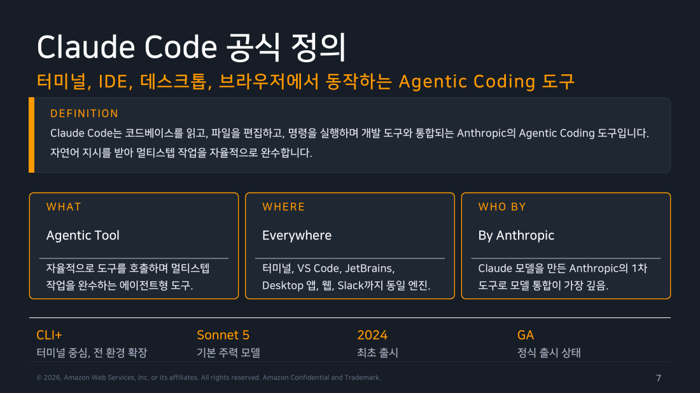
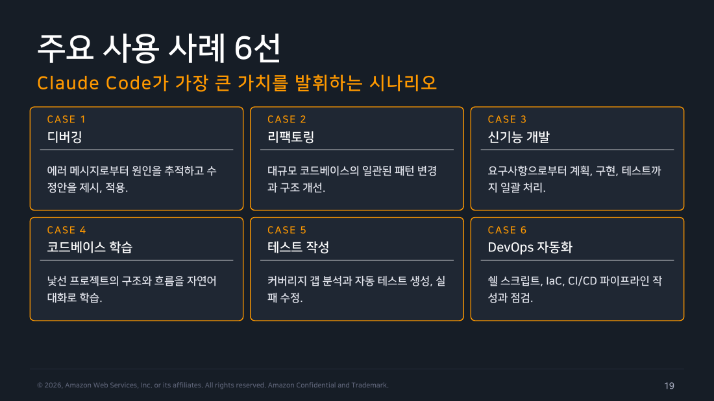

Part 1 — Claude Code란 무엇인가¶
한 줄 요약¶
Claude Code는 코드베이스를 읽고, 파일을 편집하고, 명령을 실행하며 개발 도구와 통합되는 Anthropic의 Agentic Coding 도구입니다. 자연어 지시를 받아 여러 단계의 작업을 자율적으로 완수합니다.
왜 알아야 하나¶
"AI 코딩 도구"라는 말은 지금 너무 많은 걸 가리킵니다. GitHub Copilot도, Cursor도, ChatGPT에 코드를 붙여넣는 것도 다 AI 코딩입니다.
그런데 이것들은 작동 방식이 근본적으로 다릅니다. 이 차이를 모르면 Claude Code를 "터미널에서 쓰는 Copilot" 정도로 오해하게 되고, 실제로도 자동완성처럼 쓰다가 "생각보다 별로네"로 끝납니다. 실제로 이런 오해가 가장 흔한 실패 원인입니다.
그래서 Part 1의 목표는 딱 하나입니다. 왜 이것이 자동완성이 아닌가를 납득하는 것입니다.
1. 정의 — 세 가지 질문으로 좁혀가기¶
공식 정의는 이렇습니다.
Claude Code는 코드베이스를 읽고, 파일을 편집하고, 명령을 실행하며 개발 도구와 통합되는 Anthropic의 Agentic Coding 도구입니다.
한 번에 와닿지 않으니 세 가지 질문으로 쪼개보겠습니다.
무엇인가? 에이전트형 도구입니다. 여기서 "에이전트형"이란 사람이 단계마다 지시하지 않아도 스스로 도구를 골라 호출하면서 여러 단계의 작업을 끝까지 밀고 간다는 뜻입니다. 이 성질이 뒤에 나올 모든 이야기의 출발점입니다.
어디서 도는가? 터미널이 기준점이지만 거기서만 도는 건 아닙니다. VS Code, JetBrains, 데스크톱 앱, 웹, 심지어 Slack에서도 돕니다. 중요한 건 이 모든 표면이 같은 엔진을 쓴다는 점입니다. 터미널에서 만든 설정이 VS Code에서도 그대로 적용됩니다.
누가 만들었나? Anthropic입니다. Claude 모델을 만든 바로 그 회사입니다. 이게 왜 중요하냐면, Cursor나 Copilot은 남이 만든 모델을 가져다 쓰는 반면 Claude Code는 모델을 만든 회사가 자기 모델에 맞춰 직접 설계한 도구이기 때문입니다. 업계에서는 이런 걸 "1차(first-party) 도구"라고 부릅니다. 모델의 학습 방식과 도구 사용 규약이 처음부터 서로 맞춰져 있다는 의미입니다.
여기에 사실 몇 가지를 덧붙이면 그림이 완성됩니다. 2024년에 처음 나왔고, 지금은 정식 출시(GA) 상태이며, 기본 주력 모델은 Claude Sonnet 5입니다.

▲ 교재 슬라이드 7 — Claude Code 공식 정의
Anthropic이라는 회사¶
2021년에 설립된 프론티어 AI 기업입니다. "프론티어"란 최전선의 대형 모델을 직접 개발하는 회사를 가리키는 표현입니다.
이 회사를 이해하는 핵심 키워드는 AI Safety입니다. Constitutional AI 같은 안전 연구를 논문으로만 내는 게 아니라 제품에 직접 반영하는 개발 철학을 갖고 있습니다. 뒤에서 다룰 권한 모델과 체크포인트가 그 철학의 결과물이라고 보면 됩니다.
제품군은 Claude 모델 패밀리를 중심으로 Claude Code, Agent SDK, Claude API, Claude 앱이 붙어 있는 구조입니다. 그리고 AWS와 전략적 파트너십을 맺어 Amazon Bedrock에서도 Claude 모델을 제공합니다. 이 파트너십은 나중에 인증을 다룰 때 다시 등장합니다.
2. Agentic AI — "스스로 한다"가 무슨 뜻인가¶
정의: Agentic AI는 사용자의 목표를 받아 스스로 계획을 세우고, 도구를 사용하며, 결과를 관찰하면서 목표 달성까지 자율적으로 작동하는 AI 시스템입니다.
일반 챗봇은 "질문 → 답변"으로 끝나는 1회성 반응(Reactive)입니다. Agentic AI는 여기에 네 가지 성질이 더해집니다.
첫째, 목표 주도(Goal-driven) 입니다. "이 파일을 열어라, 그다음 저 함수를 고쳐라" 같은 단계별 명령이 아니라 "테스트가 통과하게 만들어라"라는 최종 목표를 받고, 거기까지 가는 경로를 스스로 결정합니다.
둘째, 도구 사용(Tool-using) 입니다. 파일을 읽고, 명령을 실행하고, 웹을 검색하는 등 외부 도구를 능동적으로 호출합니다. 이게 없으면 아무리 똑똑해도 텍스트만 뱉는 챗봇에 머뭅니다.
셋째, 관찰(Observative) 입니다. 도구를 호출한 뒤 그 결과를 보고 다음 행동을 정합니다. 테스트를 돌렸는데 실패했다면 그 실패 로그가 다음 행동의 입력이 됩니다.
넷째, 반복(Iterative) 입니다. 한 번에 안 되면 다른 접근을 시도합니다. 스스로 고쳐가며 완료까지 반복합니다.
이 넷을 한 문장으로 줄이면 이렇게 됩니다. 목표를 주면, 도구를 써서, 결과를 보고, 될 때까지 반복한다.
Agentic Loop — 실제로 도는 세 단계¶
작업을 하나 주면 Claude는 아래 세 단계를 섞어가며 수십 개의 행동을 연결합니다.
flowchart LR
A["<b>① Gather Context</b><br/>컨텍스트 수집<br/><br/>파일 검색·읽기로 코드 이해<br/>CLAUDE.md·메모리 로드"]
B["<b>② Take Action</b><br/>도구로 행동<br/><br/>파일 편집·명령 실행·커밋<br/>실제 변경 수행"]
C["<b>③ Verify Results</b><br/>결과 검증<br/><br/>테스트 실행·타입 검사<br/>결과 관찰 후 다음 판단"]
D(["완료"])
A --> B --> C
C -->|아직 목표 미달| A
C -->|목표 달성| D
style A fill:#ede7f6,stroke:#673ab7,stroke-width:2px,color:#000
style B fill:#e3f2fd,stroke:#1976d2,stroke-width:2px,color:#000
style C fill:#e8f5e9,stroke:#388e3c,stroke-width:2px,color:#000
style D fill:#fff3e0,stroke:#f57c00,stroke-width:2px,color:#000수집 단계에서는 관련 파일을 검색하고 읽으면서 코드를 이해합니다. 프로젝트 지침(CLAUDE.md)과 메모리도 이때 함께 로드됩니다.
행동 단계에서는 실제로 무언가를 바꿉니다. 파일을 편집하고, 명령을 실행하고, 필요하면 커밋까지 합니다.
검증 단계에서는 그 변경이 맞았는지 확인합니다. 테스트를 돌리고, 타입 검사를 하고, 결과를 보고 다음 판단을 내립니다.
그리고 목표에 도달할 때까지 이 셋을 반복합니다.
초보자가 놓치기 쉬운 포인트
이 루프가 도는 동안 내가 구경만 하는 게 아닙니다. Esc 한 번이면 즉시 멈추고 방향을 바꿀 수 있습니다.
그래서 "AI가 알아서 다 한다"는 그림은 틀렸습니다. 정확한 그림은 "AI가 달리는 중에 내가 언제든 핸들을 잡을 수 있다" 입니다. 이 감각이 Claude Code를 잘 쓰는 사람과 못 쓰는 사람을 가릅니다.
3. 자동완성과 무엇이 다른가¶
이제 Part 1에서 가장 중요한 대목입니다. 한 문장으로 줄이면 이렇습니다.
자동완성은 커서 위치에서 다음 코드를 제안하고, Agentic Coding은 목표를 받아 저장소 전체에서 작업을 완수합니다.
이 차이가 실제로는 네 가지 층위에서 나타납니다.
보는 범위가 다릅니다. 자동완성은 지금 열려 있는 파일과 커서 주변만 봅니다. Claude Code는 저장소 전체에 더해 터미널과 git 상태까지 봅니다. 그래서 "이 함수를 고치면 어디가 깨지는지"를 물어볼 수 있습니다.
만들어내는 결과물이 다릅니다. 자동완성은 다음 몇 줄을 제안합니다. Claude Code는 여러 파일을 실제로 편집하고 명령까지 실행합니다.
검증 책임이 다릅니다. 이게 가장 큰 차이입니다. 자동완성이 제안한 코드가 맞는지 확인하는 건 전적으로 개발자 몫입니다. Claude Code는 테스트를 스스로 돌려서 검증하고, 실패하면 다시 고칩니다.
동작하는 곳이 다릅니다. 자동완성은 IDE 안에서만 삽니다. Claude Code는 터미널, IDE, 웹 어디서든 돕니다.
구체적인 예를 들면, 자동완성의 전형적인 작업은 "함수 시그니처 자동완성"이고 Claude Code의 전형적인 작업은 "실패하는 테스트의 원인을 추적해서 수정하기"입니다. 결이 완전히 다릅니다.

▲ 교재 슬라이드 19 — 주요 사용 사례 6선
다른 도구들 사이에서의 위치 (2026.07 기준)¶
Claude Code는 터미널 중심 에이전트이면서 전 환경으로 확장되고 SDK까지 제공합니다. 가장 잘하는 영역은 저장소 단위의 자율 작업입니다.
GitHub Copilot은 IDE 자동완성에서 출발해 지금 에이전트 기능을 확장하는 중입니다. 여전히 강점은 IDE 안의 코드 제안입니다.
Cursor는 아예 AI를 전제로 만든 IDE입니다. 에디터 경험 자체가 중심이고, IDE 통합 워크플로에 강합니다.
OpenAI Codex는 클라우드 에이전트와 CLI를 함께 굴리는 형태로, 작업을 위임해두는 방식에 어울립니다.
Gemini CLI는 Google 생태계의 CLI 에이전트로 GCP 연계 작업에 자연스럽습니다.
📋 도구 비교 — 빠른 참조
| 도구 | 특성 | 강점 영역 |
|---|---|---|
| Claude Code | 터미널 중심 에이전트, 전 환경 확장, SDK 제공 | 저장소 단위 자율 작업 |
| GitHub Copilot | IDE 자동완성에서 출발, 에이전트 기능 확장 중 | IDE 내 코드 제안 |
| Cursor | AI 네이티브 IDE, 에디터 경험 중심 | IDE 통합 워크플로 |
| OpenAI Codex | 클라우드 에이전트와 CLI 병행 | 위임형 클라우드 작업 |
| Gemini CLI | Google 생태계 CLI 에이전트 | GCP 연계 작업 |
4. 모델 — 하나가 아니라 골라 쓰는 것¶
Claude Code는 모델 하나로만 도는 게 아닙니다. 작업 난이도에 따라 모델을 갈아탑니다. 이걸 모르면 쉬운 작업에 비싼 모델을 쓰면서 "왜 이렇게 비싸지"라고 생각하게 됩니다.
현재 라인업은 네 단계입니다.
가장 위에 Claude Fable 5가 있습니다. 최상위 Mythos-class 모델로 장시간 자율 세션에 특화되어 있습니다. 가장 어렵고 규모가 큰 작업에 씁니다.
그다음이 Claude Opus 4.8입니다. 깊은 추론이 필요한 작업, 복잡한 아키텍처 결정에 적합합니다. 대규모 리팩토링이나 설계가 여기 해당합니다.
기본값은 Claude Sonnet 5입니다. 네이티브 1M 토큰 컨텍스트를 갖고 있어서 큰 코드베이스도 감당합니다. 일상 코딩 작업 전반이 여기서 처리됩니다.
가장 가벼운 건 Claude Haiku 4.5입니다. 빠르고 비용 효율이 좋습니다. 간단한 변환, 검색, 분류처럼 판단이 단순한 작업에 씁니다.
세션 중에 /model 명령으로 언제든 바꿀 수 있습니다. 참고로 Sonnet 5는 v2.1.197 이상, Fable 5는 v2.1.170 이상이 필요합니다.
Alias — 버전 번호를 외우지 않아도 되는 이유¶
모델 버전은 계속 바뀝니다. claude-opus-4-8-20260315 같은 걸 외워서 쓸 수는 없습니다. 그래서 별칭(alias) 을 씁니다.
기본 사용법은 단순합니다. sonnet이나 haiku라고 쓰면 최신 Sonnet·Haiku가 잡히고, opus나 fable이라고 쓰면 최신 Opus나 Fable 5가 잡힙니다. default는 내 계정 유형에 맞는 권장 모델로 되돌리는 특수값이고, best는 "쓸 수 있는 것 중 가장 좋은 것"을 자동으로 고릅니다.
여기에 조금 특별한 두 개가 있습니다.
opus[1m]은 Opus를 1M 토큰 컨텍스트로 쓰겠다는 뜻입니다. 아주 긴 세션에 씁니다.
opusplan은 계획 단계에서는 opus를, 실행 단계에서는 sonnet을 자동으로 쓰는 alias입니다.
opusplan이 왜 실무에서 가장 가성비가 좋은가
소프트웨어 작업에서 정말 어려운 건 "무엇을 어떻게 바꿀지 정하는 것"이고, 정해진 계획대로 코드를 치는 건 상대적으로 쉽습니다. 그래서 비싼 모델은 계획에만 투입하고 실행은 싼 모델에 맡기면, 품질은 거의 유지하면서 비용은 크게 떨어집니다. 이 발상이 alias 하나에 들어가 있습니다.
📋 모델과 Alias — 빠른 참조
| 모델 | 특성 | 적합한 작업 |
|---|---|---|
| Claude Fable 5 | 최상위 Mythos-class, 장시간 자율 세션 특화 | 가장 어렵고 규모가 큰 작업 |
| Claude Opus 4.8 | 깊은 추론, 복잡한 아키텍처 결정 | 복잡한 리팩토링, 설계 |
| Claude Sonnet 5 | 기본 모델, 네이티브 1M 컨텍스트 | 일상 코딩 작업 전반 |
| Claude Haiku 4.5 | 빠른 응답, 비용 효율 | 간단한 변환, 검색, 분류 |
| Alias | 해석 | 용도 |
|---|---|---|
default |
계정 유형별 권장 모델로 복귀 | 오버라이드 해제 |
best |
Fable 5 접근 가능하면 Fable 5, 아니면 최신 Opus | 최고 성능 자동 선택 |
fable / opus |
Fable 5 또는 최신 Opus | 난제, 장기 세션 |
sonnet / haiku |
최신 Sonnet 또는 Haiku | 일상 작업, 경량 작업 |
opus[1m] |
1M 토큰 컨텍스트로 Opus 사용 | 초장기 세션 |
opusplan |
Plan은 opus, 실행은 sonnet | 계획 품질과 실행 비용의 균형 |
5. 어디서 실행되는가 — 표면은 여섯, 엔진은 하나¶
Anthropic이 쓰는 표현은 "Use Claude Code Everywhere"입니다. 실행 표면은 여섯 가지인데, 중요한 건 이 모두가 같은 엔진을 공유한다는 점입니다.
flowchart TD
E["<b>동일 엔진</b><br/>같은 설정 · 같은 CLAUDE.md · 같은 MCP 서버"]
E --- T["Terminal CLI<br/><i>모든 기능의 기준점</i>"]
E --- V["VS Code / Cursor<br/><i>인라인 diff, @-mention</i>"]
E --- J["JetBrains<br/><i>대화형 diff</i>"]
E --- D["Desktop App<br/><i>병렬 세션, 예약 작업</i>"]
E --- W["Web / iOS<br/><i>설치 없이 클라우드</i>"]
E --- S["Slack / CI / Chrome<br/><i>팀 협업, 파이프라인</i>"]
style E fill:#673ab7,stroke:#4527a0,stroke-width:3px,color:#fff
style T fill:#ede7f6,stroke:#673ab7,color:#000
style V fill:#e3f2fd,stroke:#1976d2,color:#000
style J fill:#e3f2fd,stroke:#1976d2,color:#000
style D fill:#e8f5e9,stroke:#388e3c,color:#000
style W fill:#fff3e0,stroke:#f57c00,color:#000
style S fill:#fce4ec,stroke:#c2185b,color:#000터미널 CLI가 모든 기능의 기준점입니다. 파이프와 스크립트 같은 Unix 조합성을 온전히 쓸 수 있는 유일한 표면이기도 합니다.
VS Code와 Cursor에서는 인라인 diff, @-mention, 플랜 검토를 에디터 안에서 처리합니다. JetBrains 계열(IntelliJ, PyCharm 등)에서는 대화형 diff와 선택 영역 컨텍스트 공유가 됩니다.
데스크톱 앱은 병렬 세션이 강점입니다. 여러 세션을 동시에 굴리면서 시각적 diff를 보고, 예약 작업을 걸고, 클라우드 세션까지 한 화면에서 운영합니다.
웹(claude.ai/code)과 iOS 앱에서는 설치 없이 클라우드에서 실행합니다. 모바일에서 작업을 이어갈 수 있습니다.
Slack에서는 @Claude 멘션으로, CI에서는 GitHub Actions로, Chrome에서는 라이브 웹앱 디버깅으로 붙습니다.
그런데 왜 터미널이 기준인가¶
여러 표면이 있는데도 터미널을 "기준점"이라고 부르는 데는 이유가 있습니다. Anthropic이 드는 근거는 Unix 철학입니다.
터미널에서 할 수 있는 모든 것을 Claude도 할 수 있습니다.
첫째, 개발 도구가 전부 CLI에 있습니다. 빌드 도구, git, 패키지 매니저, 클라우드 CLI — 전부 명령줄 도구입니다. 터미널에 있다는 건 이 생태계 전체를 그대로 쓸 수 있다는 뜻입니다.
둘째, 조합이 됩니다. 파이프로 연결하고, 리다이렉트하고, jq와 엮어서 원하는 워크플로를 만들 수 있습니다.
셋째, 자동화에 그대로 들어갑니다. -p 헤드리스 모드 하나면 CI/CD와 스크립트에 즉시 편입됩니다.
넷째, 에디터에 종속되지 않습니다. 팀원마다 다른 IDE를 써도 상관없습니다.
6. 네 가지 핵심 가치와 자율성 다이얼¶
팀이 Claude Code를 도입하는 이유를 네 가지로 정리하면 이렇습니다.
깊은 코드 이해 — 단일 파일이 아니라 프로젝트 전체를 자율적으로 탐색하면서 컨텍스트를 만듭니다.
실제 작업 완수 — 제안에서 끝나지 않고 파일 수정, 테스트 실행, PR 생성까지 갑니다.
안전한 권한 모델 — allow/ask/deny 규칙과 체크포인트로 동작 범위를 통제합니다.
확장 가능한 통합 — Skills, Subagents, MCP, Hooks, SDK로 우리 워크플로에 맞게 확장합니다.
세 번째 "안전한 권한 모델"을 조금 더 보겠습니다. 실전에서 가장 자주 만지는 부분이기 때문입니다.
자율성 스펙트럼 — 위험도에 맞춰 돌리는 다이얼¶
권한 모드는 네 가지이고, Shift+Tab으로 순환합니다. 오른쪽으로 갈수록 Claude의 자율성이 커지고 내 개입이 줄어듭니다.
flowchart LR
P["<b>Plan</b><br/>소스 수정 없이<br/>탐색과 계획만<br/>승인 후 실행"]
DF["<b>Default</b><br/>파일 편집과<br/>셸 명령 전<br/>매번 질문"]
AE["<b>Accept Edits</b><br/>편집·mkdir 등<br/>파일 작업 자동<br/>그 외는 질문"]
AU["<b>Auto</b><br/>백그라운드<br/>안전 검사로<br/>전 행동 평가"]
P --> DF --> AE --> AU
style P fill:#e8f5e9,stroke:#388e3c,stroke-width:2px,color:#000
style DF fill:#e3f2fd,stroke:#1976d2,stroke-width:2px,color:#000
style AE fill:#fff3e0,stroke:#f57c00,stroke-width:2px,color:#000
style AU fill:#ffebee,stroke:#d32f2f,stroke-width:2px,color:#000Plan 모드는 소스를 전혀 건드리지 않습니다. 탐색하고 계획만 세운 뒤 내가 승인하면 그때 실행으로 넘어갑니다.
Default 모드는 파일을 편집하거나 셸 명령을 실행하기 전에 매번 묻습니다. 처음 쓸 때 승인 흐름을 익히기 좋습니다.
Accept Edits 모드는 편집이나 디렉토리 생성 같은 파일 작업은 자동으로 진행하고, 그 외에는 묻습니다. 반복 작업에서 속도가 붙습니다.
Auto 모드는 백그라운드 안전 검사가 모든 행동을 평가합니다. 아직 리서치 프리뷰 상태입니다.
비대화형 환경(CI 등)에서는 키보드를 누를 사람이 없으므로 --permission-mode 플래그와 사전에 합의된 allow 규칙으로 운영합니다.
7. 어디에 쓰는가 — 여섯 가지 실제 시나리오¶
개념은 여기까지입니다. 이제 실제로 어떤 일에 쓰는지 보겠습니다.
시나리오 1 — 디버깅¶
에러 메시지에서 출발해 원인을 추적하고 수정안을 적용합니다.
$ npm test
# FAIL src/auth/session.test.ts
# TypeError: Cannot read properties of undefined
$ claude "npm test가 실패해. 원인을 찾아 고치고 테스트가 통과하는지 확인해줘"
Claude는 먼저 테스트를 실행해 실패 로그를 확보하고, 스택트레이스에 나온 session.ts를 읽습니다. null 가드가 빠진 걸 확인하면 Edit로 고치고, 마지막으로 npm test를 다시 돌려 통과를 확인합니다.
이게 잘 되는 이유는 세 가지입니다. 에러 메시지가 그 자체로 훌륭한 시작 컨텍스트이고, 테스트를 스스로 돌려 검증할 수 있으며, 원인이 여러 파일에 걸쳐 있어도 추적이 됩니다. 게다가 수정 전 스냅샷이 남아서 마음에 안 들면 되돌릴 수 있습니다.
시나리오 2 — 리팩토링¶
저장소 전반에 걸친 일관된 패턴 변경입니다.
Grep으로 fs.readFile( 같은 호출 지점을 모으고, 파일별로 Edit하면서 import 구문까지 정리합니다. 그다음 npm run lint && npm test를 돌리고, 실패한 지점을 다시 고친 뒤 요약을 보고합니다.
여기서 얻는 이점은 규모입니다. 수십 개 파일에 같은 규칙을 적용하면서 import 정리 같은 부수 변경까지 챙기고, 린트와 테스트로 회귀를 막습니다. 전체 변경은 /diff로 한눈에 검토합니다.
시나리오 3 — 신기능 개발¶
요구사항에서 계획, 구현, 테스트까지 이어집니다. 여기서는 Plan 모드로 두 단계에 나눠 진행하는 게 핵심입니다.
$ claude
> (Shift+Tab 두 번으로 Plan 모드 진입)
> /users API에 커서 기반 페이지네이션을 추가하고 싶어. 먼저 계획을 세워줘.
# Plan 모드 산출물 예시
# 1. 스키마: cursor, limit 파라미터 정의
# 2. 변경 파일: routes, service, repo 3곳
# 3. 테스트: 경계값 4케이스 추가
> 계획 승인. 구현하고 테스트까지 실행해줘.
탐색과 계획을 코드 작성에서 분리하면, 방향이 틀렸을 때 코드를 쓰기 전에 잡을 수 있습니다. 그래서 큰 변경일수록 이 2단계의 가치가 커집니다.
시나리오 4 — 코드베이스 학습¶
낯선 프로젝트를 대화로 파악합니다.
$ cd unfamiliar-project && claude
> 이 프로젝트의 전체 구조를 설명해줘.
> 인증은 어디서 어떻게 처리돼?
> 결제 실패 시 재시도 로직을 따라가며 호출 흐름을 정리해줘.
Glob, Grep, Read로 구조를 훑고 진입점부터 호출 체인을 따라가며, 다이어그램에 준하는 텍스트 요약을 만들어냅니다.
가치는 명확합니다. 온보딩 기간이 며칠에서 시간 단위로 줄어듭니다. 질문할수록 이해가 깊어지고, 문서화되지 않은 흐름도 추적됩니다. 그렇게 알아낸 내용은 CLAUDE.md에 쌓아두면 다음 사람에게 그대로 넘어갑니다.
시나리오 5 — 테스트 작성¶
커버리지 갭을 분석하고 테스트를 생성한 뒤 실패까지 고칩니다.
$ claude "auth 모듈의 테스트를 작성하고 실행해서 실패하면 수정까지 해줘"
# 헤드리스로 커버리지 리포트 자동화
$ claude -p "커버리지 80% 미만 파일 목록" \
--allowed-tools "Bash(npm run coverage),Read"
기존 테스트와 커버리지 현황을 파악하고, 만료 토큰 같은 미커버 분기를 정리한 다음, 프로젝트 컨벤션에 맞춰 테스트를 씁니다. 실행해서 실패하면 원인을 고치고 다시 돌립니다.
시나리오 6 — DevOps 자동화¶
셸 스크립트, IaC, 파이프라인 작성과 점검입니다.
$ claude "이 Dockerfile을 멀티스테이지로 최적화하고 이미지 크기 변화를 보고해줘"
$ claude "terraform plan 결과를 읽고 위험한 변경이 있는지 요약해줘"
$ tail -200 app.log | claude -p "이상 징후가 있으면 원인 후보와 함께 보고"
현장 메모 (인프라 엔지니어 관점)
git, docker, terraform, kubectl 등 터미널의 모든 CLI 도구를 그대로 활용합니다.
그래서 로그 파이프 분석이 한 줄로 끝나고, IaC 변경 리뷰의 1차 필터가 됩니다.
클라우드 운영 업무에서 Claude Code의 가치는 "코드를 짜준다"보다 "수백 줄짜리 plan과 log를 대신 읽어준다" 쪽이 훨씬 큽니다. 이 부분은 Part 10의 실습 기록에서 실제 로그로 검증했습니다.
8. 얼마인가 — 구독과 청구 경로¶
먼저 알아둘 것 하나. Free 플랜에서는 Claude Code를 쓸 수 없습니다. 웹 채팅 전용입니다.
개인이라면 Claude Pro 또는 Max 구독이 기본 경로입니다. 월 정액이고 OAuth로 로그인합니다.
조직 단위로 도입한다면 Team 또는 Enterprise입니다. 중앙 청구, SSO, 정책 통제, 관리 콘솔이 붙습니다.
API 종량제를 선호하는 조직은 Claude Console을 씁니다. Claude Code 전용 롤이 있어서 키의 용도 자체를 제한할 수 있습니다.
이미 클라우드를 쓰고 있다면 Bedrock / Vertex / Foundry 경로가 있습니다. 기존 클라우드 자격증명을 그대로 쓰고 청구도 그쪽으로 통합됩니다. 엔터프라이즈 표준 경로가 여기입니다.
9. 내 코드는 어디로 가는가 — 보안과 데이터 정책¶
도입 검토에서 반드시 나오는 질문입니다. 답의 핵심은 신뢰 경계(Trust Boundary) 개념입니다.
로컬 실행 시 코드는 내 머신에 있고, 모델 추론에 필요한 컨텍스트만 API로 전송됩니다.
즉 저장소 전체가 업로드되는 게 아닙니다. 파일 접근과 명령 실행은 내 머신에서 일어나고 권한 규칙으로 통제됩니다. 네트워크로 나가는 건 모델이 판단하는 데 필요한 부분뿐이며, 그 구간은 TLS로 보호됩니다. 저장되는 데이터는 AES-256으로 암호화됩니다.
Bedrock을 쓰면 한 단계 더 나아갑니다. 트래픽이 AWS 계정 경계 안에서 처리되므로 데이터가 조직의 클라우드 경계를 벗어나지 않습니다. PrivateLink를 붙이면 VPC 내부 통신으로 가둘 수도 있습니다.
조직 차원의 통제 수단도 있습니다. managed settings로 정책을 강제하고, 감사 로그로 추적하며, ZDR(Zero Data Retention) 옵션으로 보존 자체를 없앨 수 있습니다.
학습에 쓰이는가¶
가장 많이 받는 질문입니다. 답은 상업용 계정은 기본적으로 학습에 사용되지 않습니다. 명시적으로 동의한 경우에만 사용되며, 이는 Console과 Bedrock 경로에도 동일하게 적용됩니다.
보존은 안전성 검토 목적으로 제한적으로만 이뤄지고, ZDR 계약이 있으면 보존 자체가 없습니다. 사람이 내용을 보는 건 약관 위반이 의심되는 예외 상황에 한정되며 평소에는 자동화 시스템이 처리합니다. 제3자 공유는 소환장 같은 법적 의무 외에는 없습니다.
📋 데이터 정책 — 빠른 참조
| 항목 | 내용 |
|---|---|
| 학습 사용 | 상업용 계정은 기본 미사용, 명시 동의 시에만 (Console·Bedrock 포함) |
| 보존 기간 | 안전성 검토 목적의 제한적 보존. ZDR 계약 시 보존 없음 |
| 인간 검토 | 약관 위반 의심 등 예외 상황에 한정, 자동화 시스템 우선 |
| 제3자 공유 | 법적 의무(소환장 등) 외 없음 |
| 암호화 | TLS in transit, AES-256 at rest — 모든 경로 동일 |
흔한 오해 바로잡기¶
"터미널 도구니까 IDE 쓰면 못 쓴다" — 동일 엔진이 VS Code, JetBrains, 데스크톱, 웹에서 모두 돕니다. 설정과 CLAUDE.md도 그대로 공유됩니다.
"Node.js를 깔아야 한다" — Native 설치는 단일 바이너리라 Node가 필요 없습니다. npm 경로로 설치할 때만 Node 18+가 필요합니다.
"무료로 써볼 수 있다" — Free 플랜은 Claude Code를 포함하지 않습니다. 구독이나 API 계정이 있어야 합니다.
"내 코드가 학습에 쓰인다" — 상업용 계정은 기본 미사용이며 명시 동의 시에만 사용됩니다.
"모델을 하나 골라야 한다" — 세션 중 /model로 언제든 바꿉니다. opusplan처럼 자동으로 배분해주는 alias도 있습니다.
정리¶
Claude Code는 Agentic Loop(수집 → 실행 → 검증의 반복)로 저장소 단위 작업을 완수하는 Anthropic의 1차 도구입니다.
자동완성과의 차이는 결국 두 가지로 압축됩니다. 범위가 파일이 아니라 저장소이고, 책임이 제안에서 끝나지 않고 검증까지 간다는 점입니다.
모델은 Fable 5, Opus 4.8, Sonnet 5, Haiku 4.5 네 단계이고 버전 번호 대신 alias로 지정합니다.
실행 표면은 CLI, IDE, 데스크톱, 웹, Slack까지 여섯 가지지만 엔진과 설정은 하나입니다.
코드는 로컬에 남고 컨텍스트만 전송되며, 상업용 계정은 기본적으로 학습에 사용되지 않습니다.
출처¶
- Claude Code Deep Dive Workshop — Chapter 1 / Part 1: What is Claude Code (26p)
- 공식 문서: Overview · How Claude Code works · Model configuration · Data usage · Security